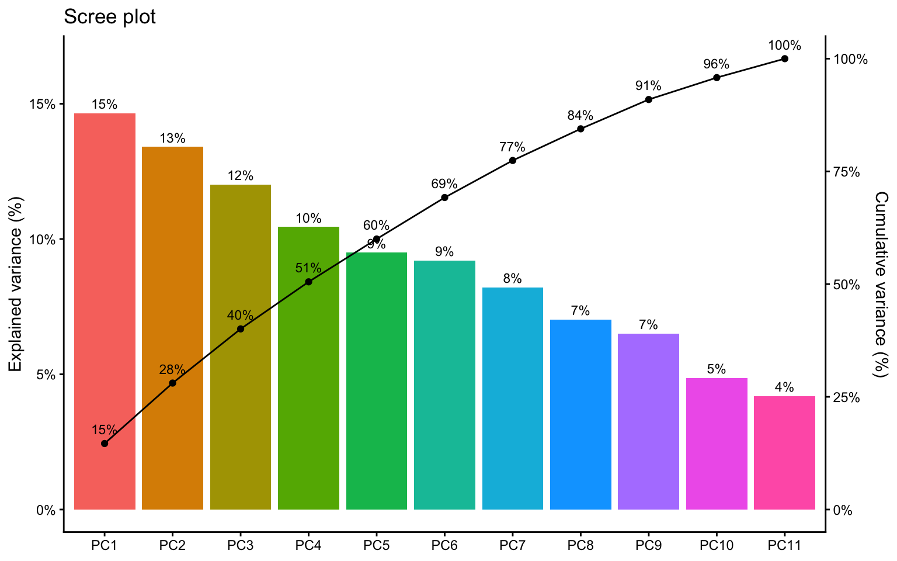
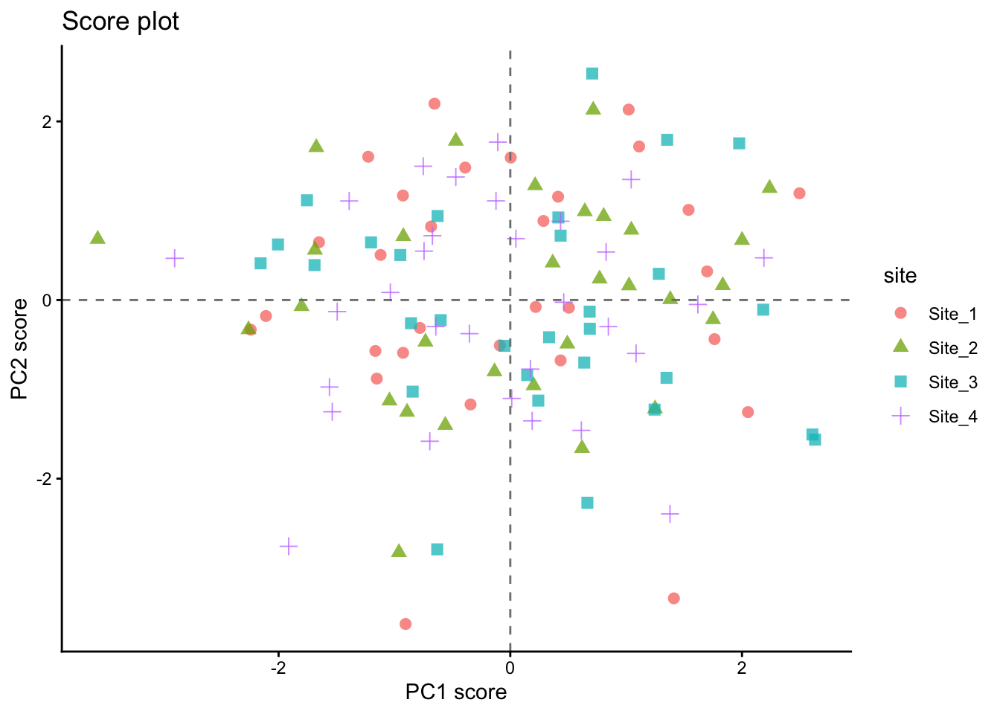
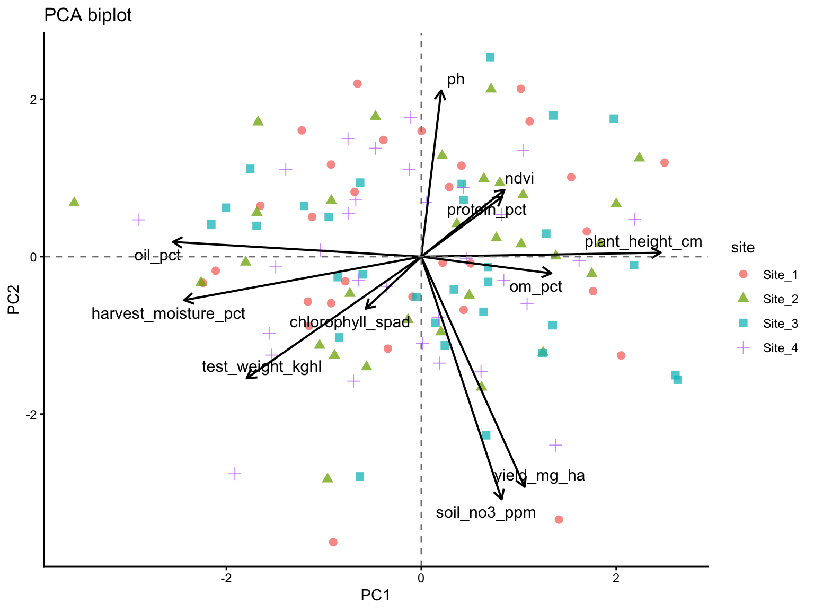
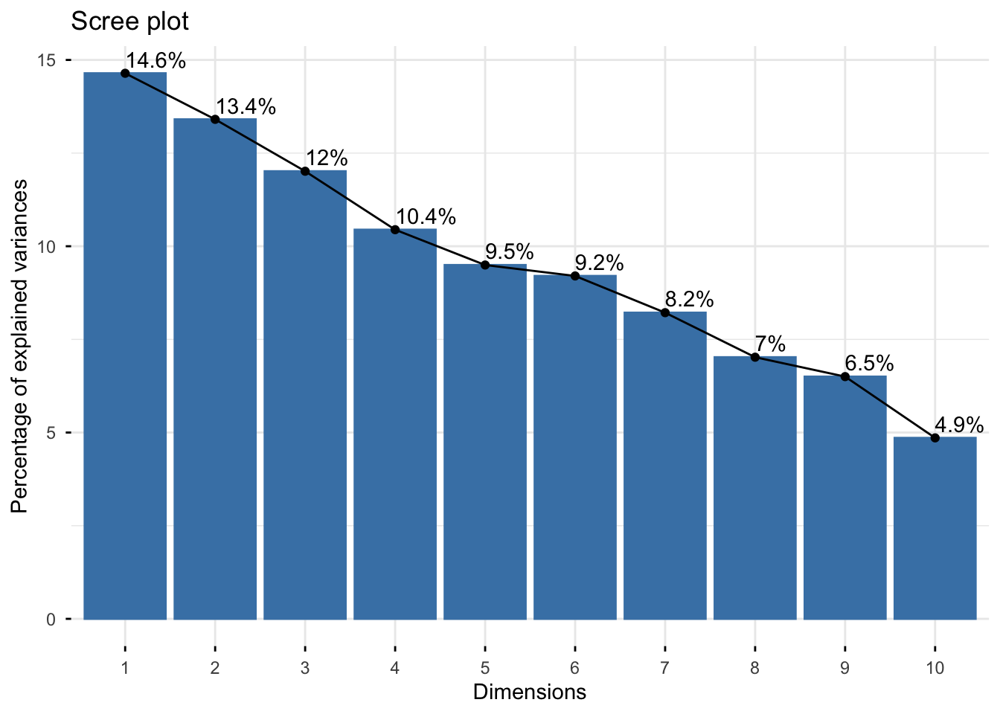
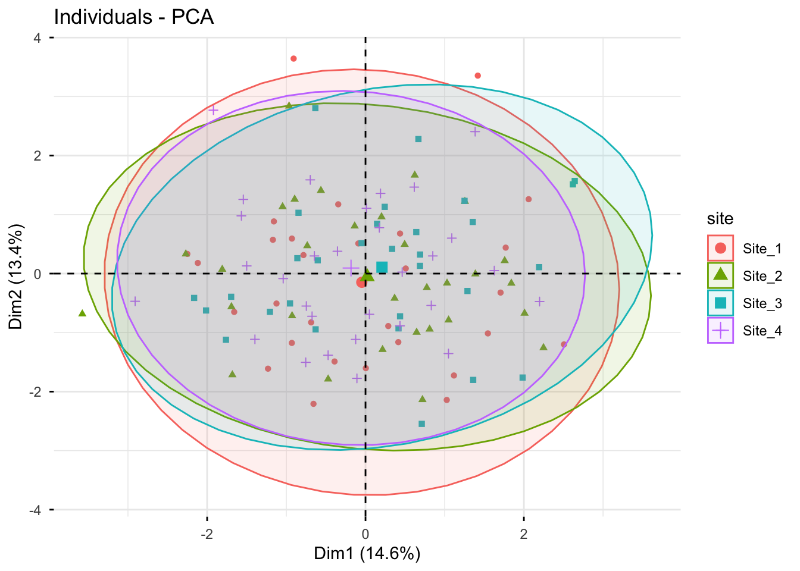
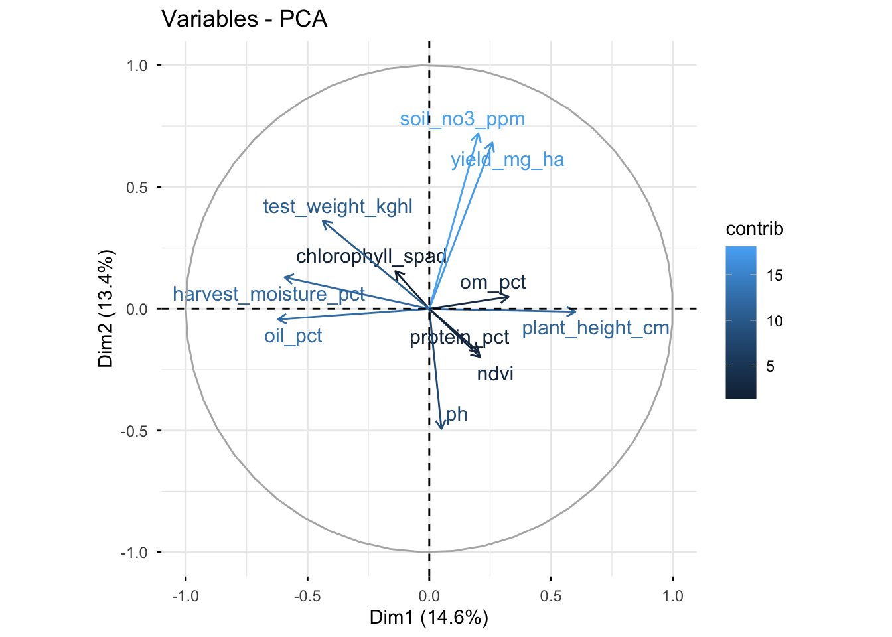
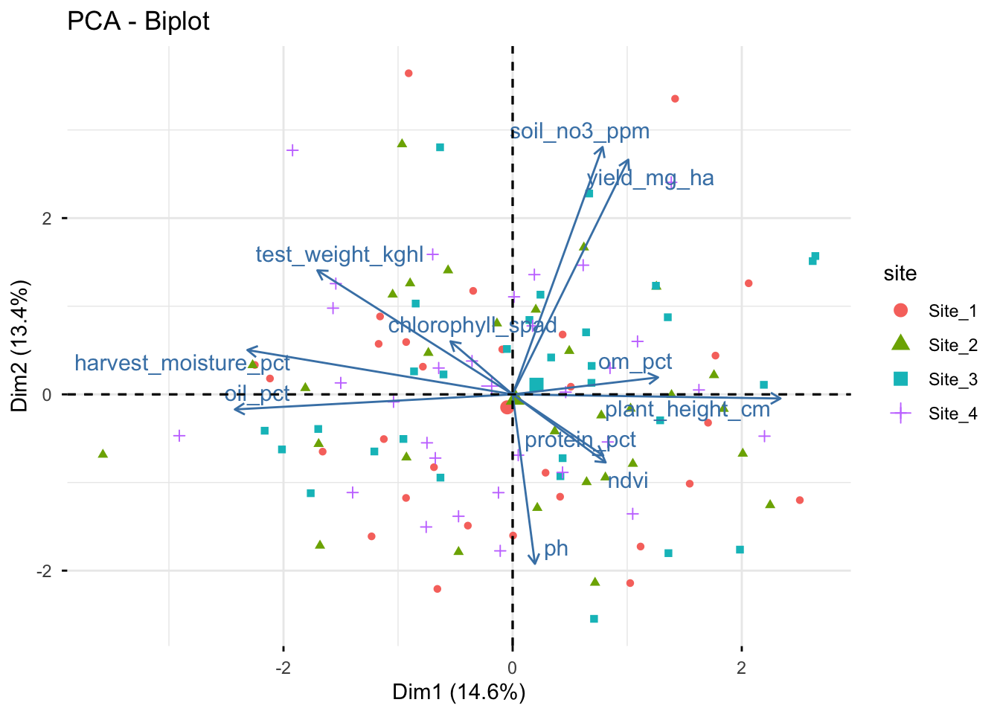
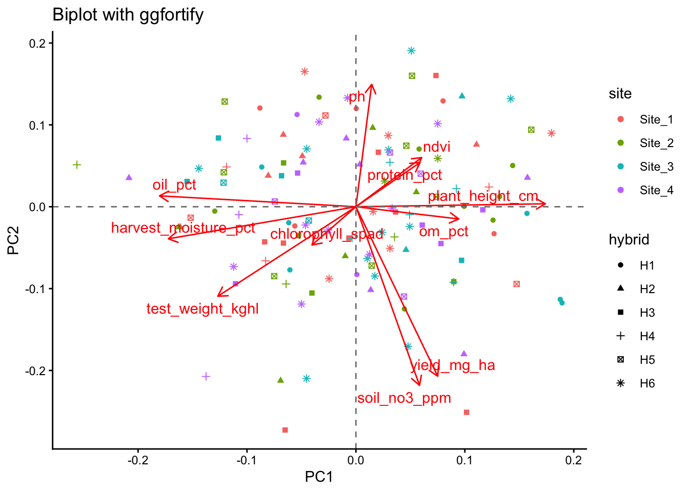
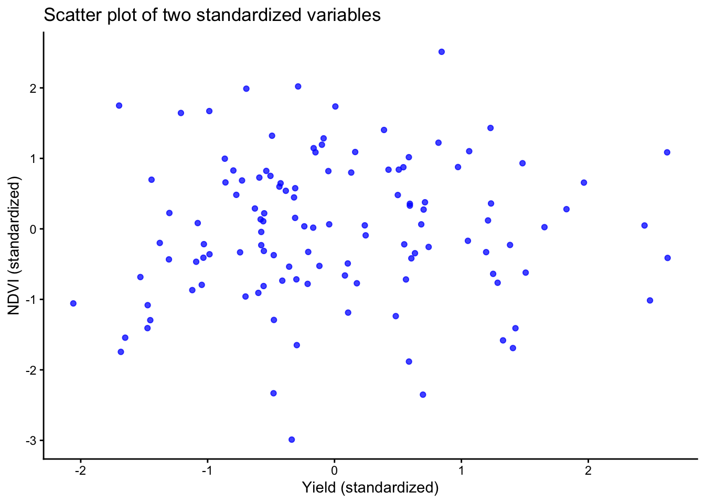

Principal Component Analysis (PCA)
Overview
This class introduces Principal Component Analysis (PCA) as a practical tool for exploring multivariate agronomic datasets. The workflow is intentionally simple and reproducible: organize the data, prepare numeric variables, run PCA, tidy the outputs, and interpret the main patterns with clear visualizations. For accessible introductions to PCA concepts and interpretation, see Lever, Krzywinski, and Altman (2017), Husson, Lê, and Pagès (2017), and Borcard, Gillet, and Legendre (2018).
Learning goals
- Understand what PCA does (and what it does not do)
- Decide when PCA is appropriate
- Run PCA in R using
prcomp() - Tidy PCA outputs with
broom - Build scree plots, score plots, and biplots in
ggplot2 - Recognize common pitfalls related to scaling, missing values, outliers, and low-dimensional data
1 Packages
We start by loading the main packages used throughout the lesson. The goal is to keep the workflow tidy, readable, and easy to adapt later.
These packages are convenient for quick PCA figures, but they are not required for the core lesson.
Show code
p_load(factoextra,
ggfortify,
FactoMineR)Because we simulate a dataset below, we set a random seed so everyone gets the same results.
Show code
set.seed(123)2 What is a PCA?
A PCA is a linear transformation technique that reduces the dimensionality of a dataset while retaining as much variance as possible. It does this by finding new axes (principal components) that capture the most variation in the data. Thus, the PCA creates new variables called principal components, which are linear combinations of the original variables.
- PC1 captures the largest possible share of variation
- PC2 captures the next largest share, while remaining orthogonal to PC1
- With p variables, PCA can produce up to p components
In practice, a PCA helps summarize multivariate structure and can reveal gradients, clustering, and redundancy among variables (Lever, Krzywinski, and Altman 2017; James et al. 2021).
3 When to use PCA
PCA is most useful when several numeric variables are measured on the same observations and some of those variables are correlated. It is often used for exploratory analysis and dimensionality reduction (Husson, Lê, and Pagès 2017; Borcard, Gillet, and Legendre 2018).
Use PCA when you have:
- Several numeric variables (often 4 or more)
- Potential correlation among variables
- An exploratory goal such as pattern detection or variable summarization
Be cautious when:
- You only have 2 variables
- Variables are on very different scales and are not standardized
- Missing values, strong outliers, or nonlinear patterns dominate the dataset
4 Example dataset
To illustrate the workflow, we create a synthetic agronomic dataset with variables related to yield, quality, canopy status, crop growth, and soil conditions. The relationships are not meant to be perfect, but they are realistic enough for teaching interpretation.
Show code
trial <- tibble(
site = rep(paste0("Site_", 1:4), each = 30),
hybrid = sample(paste0("H", 1:6), size = 120, replace = TRUE),
yield_mg_ha = rnorm(120, mean = 11.0, sd = 1.2),
protein_pct = rnorm(120, mean = 8.5, sd = 0.6),
oil_pct = rnorm(120, mean = 4.2, sd = 0.3),
ndvi = pmin(pmax(rnorm(120, mean = 0.78, sd = 0.06), 0.4), 0.95),
chlorophyll_spad = rnorm(120, mean = 47, sd = 4),
plant_height_cm = rnorm(120, mean = 245, sd = 18),
test_weight_kghl = rnorm(120, mean = 74, sd = 2.5),
harvest_moisture_pct = rnorm(120, mean = 18.5, sd = 2.0),
soil_no3_ppm = rgamma(120, shape = 8, rate = 0.25),
om_pct = rnorm(120, mean = 3.5, sd = 0.7),
ph = rnorm(120, mean = 6.6, sd = 0.35)
) %>%
mutate(
yield_mg_ha = yield_mg_ha + 0.03 * soil_no3_ppm + 2.0 * (ndvi - mean(ndvi)) +
0.01 * (plant_height_cm - mean(plant_height_cm)),
protein_pct = protein_pct + 0.10 * (om_pct - mean(om_pct)) +
0.05 * (chlorophyll_spad - mean(chlorophyll_spad)) / sd(chlorophyll_spad),
oil_pct = oil_pct - 0.05 * (protein_pct - mean(protein_pct)),
test_weight_kghl = test_weight_kghl + 0.20 * (yield_mg_ha - mean(yield_mg_ha)),
harvest_moisture_pct = harvest_moisture_pct + 0.30 * (yield_mg_ha - mean(yield_mg_ha)),
ph = ph - 0.015 * (soil_no3_ppm - mean(soil_no3_ppm)) / sd(soil_no3_ppm)
)
trial %>% glimpse()Rows: 120
Columns: 13
$ site <chr> "Site_1", "Site_1", "Site_1", "Site_1", "Site_1",…
$ hybrid <chr> "H3", "H6", "H3", "H2", "H2", "H6", "H3", "H5", "…
$ yield_mg_ha <dbl> 12.77993, 11.35051, 13.38045, 11.19544, 11.83949,…
$ protein_pct <dbl> 9.294304, 8.327702, 8.905811, 8.236639, 8.073834,…
$ oil_pct <dbl> 4.528044, 3.809309, 4.380282, 4.058621, 4.428758,…
$ ndvi <dbl> 0.8072862, 0.8195942, 0.7680066, 0.7412932, 0.789…
$ chlorophyll_spad <dbl> 49.31489, 42.64968, 52.93612, 42.25517, 47.40432,…
$ plant_height_cm <dbl> 262.6780, 231.9071, 227.0569, 226.2496, 237.5374,…
$ test_weight_kghl <dbl> 72.53262, 76.02976, 77.18008, 74.55143, 74.34981,…
$ harvest_moisture_pct <dbl> 18.34216, 18.26456, 19.67665, 19.62144, 21.11997,…
$ soil_no3_ppm <dbl> 37.00722, 29.03372, 61.15285, 24.96396, 17.33702,…
$ om_pct <dbl> 3.157676, 3.784136, 3.438675, 3.817635, 1.922027,…
$ ph <dbl> 6.884339, 6.377122, 6.044983, 7.019542, 5.820475,…Before running PCA, it is always worth checking the structure and basic distributions of the data.
Show code
trial %>% skimr::skim()| Name | Piped data |
| Number of rows | 120 |
| Number of columns | 13 |
| _______________________ | |
| Column type frequency: | |
| character | 2 |
| numeric | 11 |
| ________________________ | |
| Group variables | None |
Variable type: character
| skim_variable | n_missing | complete_rate | min | max | empty | n_unique | whitespace |
|---|---|---|---|---|---|---|---|
| site | 0 | 1 | 6 | 6 | 0 | 4 | 0 |
| hybrid | 0 | 1 | 2 | 2 | 0 | 6 | 0 |
Variable type: numeric
| skim_variable | n_missing | complete_rate | mean | sd | p0 | p25 | p50 | p75 | p100 | hist |
|---|---|---|---|---|---|---|---|---|---|---|
| yield_mg_ha | 0 | 1 | 11.89 | 1.25 | 9.33 | 11.14 | 11.66 | 12.65 | 15.16 | ▂▇▆▃▁ |
| protein_pct | 0 | 1 | 8.55 | 0.59 | 7.36 | 8.11 | 8.49 | 8.98 | 9.85 | ▃▇▇▅▃ |
| oil_pct | 0 | 1 | 4.19 | 0.31 | 3.41 | 4.00 | 4.21 | 4.39 | 4.99 | ▂▃▇▅▁ |
| ndvi | 0 | 1 | 0.79 | 0.06 | 0.62 | 0.75 | 0.79 | 0.83 | 0.93 | ▁▃▇▆▁ |
| chlorophyll_spad | 0 | 1 | 46.45 | 4.03 | 35.76 | 43.65 | 46.89 | 49.32 | 55.35 | ▂▅▇▇▂ |
| plant_height_cm | 0 | 1 | 246.13 | 18.44 | 205.21 | 236.81 | 248.57 | 257.17 | 293.45 | ▂▃▇▃▁ |
| test_weight_kghl | 0 | 1 | 74.28 | 2.70 | 68.04 | 72.43 | 74.33 | 76.12 | 80.47 | ▂▆▇▆▂ |
| harvest_moisture_pct | 0 | 1 | 18.54 | 2.07 | 13.46 | 17.18 | 18.54 | 19.66 | 24.20 | ▂▅▇▃▁ |
| soil_no3_ppm | 0 | 1 | 30.08 | 10.50 | 9.96 | 22.12 | 28.94 | 36.69 | 61.15 | ▃▇▅▃▁ |
| om_pct | 0 | 1 | 3.44 | 0.63 | 1.92 | 2.97 | 3.44 | 3.95 | 5.08 | ▂▇▇▆▂ |
| ph | 0 | 1 | 6.64 | 0.36 | 5.78 | 6.40 | 6.61 | 6.90 | 7.54 | ▂▆▇▆▁ |
5 Prepare the data
PCA requires numeric inputs. Here we separate numeric variables from identifier columns so we can use the identifiers later for plotting and interpretation.
Show code
trial_x <- trial %>%
select(where(is.numeric))
trial_ids <- trial %>%
select(site, hybrid)
trial_x %>% glimpse()Rows: 120
Columns: 11
$ yield_mg_ha <dbl> 12.77993, 11.35051, 13.38045, 11.19544, 11.83949,…
$ protein_pct <dbl> 9.294304, 8.327702, 8.905811, 8.236639, 8.073834,…
$ oil_pct <dbl> 4.528044, 3.809309, 4.380282, 4.058621, 4.428758,…
$ ndvi <dbl> 0.8072862, 0.8195942, 0.7680066, 0.7412932, 0.789…
$ chlorophyll_spad <dbl> 49.31489, 42.64968, 52.93612, 42.25517, 47.40432,…
$ plant_height_cm <dbl> 262.6780, 231.9071, 227.0569, 226.2496, 237.5374,…
$ test_weight_kghl <dbl> 72.53262, 76.02976, 77.18008, 74.55143, 74.34981,…
$ harvest_moisture_pct <dbl> 18.34216, 18.26456, 19.67665, 19.62144, 21.11997,…
$ soil_no3_ppm <dbl> 37.00722, 29.03372, 61.15285, 24.96396, 17.33702,…
$ om_pct <dbl> 3.157676, 3.784136, 3.438675, 3.817635, 1.922027,…
$ ph <dbl> 6.884339, 6.377122, 6.044983, 7.019542, 5.820475,…Our variables are measured in very different units (for example, ppm, %, cm, and index values). Because of that, we use centering and scaling so that each variable contributes on a standardized scale.
- Centering subtracts the mean
- Scaling divides by the standard deviation
This is often called correlation-based PCA (Lever, Krzywinski, and Altman 2017; Husson, Lê, and Pagès 2017).
6 Fit the PCA
Now we run PCA with prcomp(). For most agronomic teaching examples with mixed units, center = TRUE and scale. = TRUE are appropriate defaults because they place variables on a comparable scale (Husson, Lê, and Pagès 2017; Borcard, Gillet, and Legendre 2018).
Show code
pca_fit <- trial_x %>%
prcomp(center = TRUE, scale. = TRUE)7 Tidy the outputs
A PCA object contains several useful pieces. We usually extract three of them: scores, loadings, and variance explained.
7.1 Scores
Scores are the coordinates of each observation in the principal component space.
Show code
scores <- broom::augment(pca_fit, data = trial_x) %>%
bind_cols(trial_ids) %>%
janitor::clean_names()
scores %>%
select(site, hybrid, starts_with("fitted_pc")) %>%
glimpse()Rows: 120
Columns: 13
$ site <chr> "Site_1", "Site_1", "Site_1", "Site_1", "Site_1", "Site_1"…
$ hybrid <chr> "H3", "H6", "H3", "H2", "H2", "H6", "H3", "H5", "H4", "H6"…
$ fitted_pc1 <dbl> 0.50602852, 0.21936735, -0.90371961, -0.68380662, -2.24096…
$ fitted_pc2 <dbl> -0.08626041, -0.07744697, -3.62800570, 0.82305542, -0.3321…
$ fitted_pc3 <dbl> 0.501043227, -0.208486319, 1.475132143, 0.006372921, -1.39…
$ fitted_pc4 <dbl> -0.752206937, 0.984642394, 0.070635399, 0.100153542, -0.64…
$ fitted_pc5 <dbl> 1.170137882, -0.745205395, 1.075674911, -1.441479186, 0.74…
$ fitted_pc6 <dbl> 0.02371319, 0.65723233, 0.26963748, 0.65752206, -1.2366186…
$ fitted_pc7 <dbl> -0.06099809, -0.21016195, 0.15986291, -0.67285371, -0.0952…
$ fitted_pc8 <dbl> -0.916060859, 1.325420414, 0.453538565, -0.494222891, 1.87…
$ fitted_pc9 <dbl> 1.05522362, -0.44841225, -0.33015785, -0.96160014, 0.71838…
$ fitted_pc10 <dbl> -1.14509921, 0.55489984, -0.97823451, 0.42422979, 0.973301…
$ fitted_pc11 <dbl> -0.75900664, 0.73702223, -0.40679410, 0.44461162, -0.94646…7.2 Loadings
Loadings show how strongly each original variable contributes to each principal component.
Show code
# A tibble: 22 × 3
variable pc value
<chr> <dbl> <dbl>
1 oil_pct 1 -0.490
2 plant_height_cm 1 0.473
3 harvest_moisture_pct 1 -0.468
4 test_weight_kghl 1 -0.345
5 om_pct 1 0.257
6 yield_mg_ha 1 0.204
7 ndvi 1 0.164
8 protein_pct 1 0.160
9 soil_no3_ppm 1 0.159
10 chlorophyll_spad 1 -0.110
# ℹ 12 more rows7.3 Variance explained
This table helps us see how much information is captured by each principal component and by the cumulative set of components.
Show code
# A tibble: 11 × 5
pc sd var prop_var cum_prop_var
<chr> <dbl> <dbl> <dbl> <dbl>
1 PC1 1.27 1.61 0.146 0.146
2 PC2 1.21 1.47 0.134 0.280
3 PC3 1.15 1.32 0.120 0.401
4 PC4 1.07 1.15 0.104 0.505
5 PC5 1.02 1.04 0.0950 0.600
6 PC6 1.01 1.01 0.0920 0.692
7 PC7 0.951 0.904 0.0822 0.774
8 PC8 0.879 0.772 0.0702 0.844
9 PC9 0.846 0.715 0.0650 0.909
10 PC10 0.731 0.534 0.0486 0.958
11 PC11 0.680 0.462 0.0420 1 8 Scree plot
A scree plot shows the proportion of variance explained by each component. Adding the cumulative line makes it easier to judge how many components are worth discussing, although the cutoff remains a matter of interpretation rather than a strict rule (James et al. 2021; Husson, Lê, and Pagès 2017).
Show code
conv_factor <- 6
var_explained %>%
# reorder PCs for plotting
mutate(pc = factor(pc, levels = pc)) %>%
ggplot(aes(x = pc, y = prop_var)) +
geom_col(aes(fill = pc)) +
geom_text(
aes(label = scales::percent(prop_var, accuracy = 1)),
vjust = -0.5,
size = 3
) +
geom_point(aes(y = cum_prop_var / conv_factor, group = 1)) +
geom_line(aes(y = cum_prop_var / conv_factor, group = 1)) +
geom_text(
aes(
y = cum_prop_var / conv_factor,
label = scales::percent(cum_prop_var, accuracy = 1)
),
vjust = -1,
size = 3
) +
scale_y_continuous(
labels = scales::percent_format(accuracy = 1),
sec.axis = sec_axis(
~ . * conv_factor,
labels = scales::percent_format(accuracy = 1),
name = "Cumulative variance (%)"
)
) +
labs(
title = "Scree plot",
x = NULL,
y = "Explained variance (%)"
) +
theme_classic() +
theme(legend.position = "none")
A 2D PCA plot can still be useful even when PC1 and PC2 do not explain most of the variance. But if their combined share is low, interpretation should stay modest.
9 Score plot
The score plot places observations in the reduced PCA space. This is often the easiest way to inspect whether sites, hybrids, or treatments tend to separate.
Show code
scores %>%
ggplot(aes(x = fitted_pc1, y = fitted_pc2, color = site, shape = site)) +
geom_point(alpha = 0.75, size = 2.5) +
geom_hline(yintercept = 0, linetype = "dashed", color = "gray50") +
geom_vline(xintercept = 0, linetype = "dashed", color = "gray50") +
labs(
title = "Score plot",
x = "PC1 score",
y = "PC2 score"
) +
theme_classic() +
theme(legend.position = "right")
10 Biplot
A biplot combines observation scores and variable loadings in the same figure. This makes it possible to inspect both multivariate grouping and variable directions at once.
Because scores and loadings are on different scales, we rescale the arrows before plotting.
Show code
loadings_12 <- loadings %>%
filter(pc %in% c(1, 2)) %>%
select(variable, pc, value) %>%
pivot_wider(names_from = pc, values_from = value) %>%
rename(loading_pc1 = `1`, loading_pc2 = `2`)
arrow_scale <- scores %>%
summarise(
scale = min(
(max(fitted_pc1) - min(fitted_pc1)) / (max(abs(loadings_12$loading_pc1)) * 2),
(max(fitted_pc2) - min(fitted_pc2)) / (max(abs(loadings_12$loading_pc2)) * 2)
)
) %>%
pull(scale)
arrow_scale[1] 5.198576Show code
scores %>%
ggplot(aes(x = fitted_pc1, y = fitted_pc2)) +
geom_point(aes(color = site, shape = site), alpha = 0.75, size = 2.5) +
geom_segment(
data = loadings_12,
aes(
x = 0, y = 0,
xend = loading_pc1 * arrow_scale,
yend = loading_pc2 * arrow_scale
),
inherit.aes = FALSE,
linewidth = 0.7,
arrow = arrow(length = unit(0.02, "npc"))
) +
ggrepel::geom_text_repel(
data = loadings_12,
aes(
x = loading_pc1 * arrow_scale,
y = loading_pc2 * arrow_scale,
label = variable
),
inherit.aes = FALSE,
size = 4
) +
geom_hline(yintercept = 0, linetype = "dashed", color = "gray50") +
geom_vline(xintercept = 0, linetype = "dashed", color = "gray50") +
labs(
title = "PCA biplot",
x = "PC1",
y = "PC2"
) +
theme_classic() +
theme(legend.position = "right")
11 Quick alternatives
The next examples show how other packages can complement prcomp(). They are useful for quick diagnostics, comparison across tools, and to visualize that the same PCA can be implemented in slightly different ways.
The next two options are useful shortcuts for labs and reports. The custom ggplot2 route remains helpful for understanding the mechanics of PCA, while FactoMineR and related tools show how the same ideas appear in other common multivariate workflows.
11.1 FactoMineR + factoextra
FactoMineR provides an alternative PCA workflow, and factoextra offers convenient plotting functions for both FactoMineR and prcomp() objects. This is useful to show students because many applied papers and tutorials rely on these packages.
Show code
# FactoMineR can use qualitative variables as supplementary information
pca_fm <- PCA(trial, quanti.sup = NULL, quali.sup = 1:2, graph = FALSE)
# Scree plot
fviz_eig(pca_fm, addlabels = TRUE)
Show code
# Individuals (scores), colored by the supplementary variable "site"
fviz_pca_ind(
X = pca_fm,
geom.ind = "point",
habillage = "site",
addEllipses = TRUE,
repel = TRUE
)
Show code
# Variables (loadings)
fviz_pca_var(
X = pca_fm,
col.var = "contrib",
repel = TRUE
)
Show code
# Biplot (scores + loadings)
fviz_pca_biplot(
X = pca_fm, # this can also be done with the prcomp object, but we already have the PCA from FactoMineR
habillage = "site", # coloring individuals by "site" can help reveal group patterns
addEllipses = FALSE, # ellipses can be added for groups, but they can also make the figure busier
repel = TRUE, # this is often needed to avoid label overlap, but it can be turned off for a more compact figure
geom = "point"
)
11.2 ggfortify
Show code
library(ggfortify)
autoplot(
pca_fit,
data = trial,
colour = "site",
shape = "hybrid",
loadings = TRUE,
loadings.label = TRUE,
loadings.label.repel = TRUE
) +
labs(
title = "Biplot with ggfortify",
x = "PC1",
y = "PC2"
) +
geom_hline(yintercept = 0, linetype = "dashed", color = "gray50") +
geom_vline(xintercept = 0, linetype = "dashed", color = "gray50") +
theme_classic()
12 Reading the biplot
When interpreting a biplot, focus on a few simple principles.
Points (scores)
- Points close together have similar multivariate profiles
- Separation along PC1 reflects differences on the first major gradient
- Separation along PC2 reflects differences on the second major gradient
Arrows (loadings)
- Longer arrows indicate variables that are better represented in the PC1-PC2 plane
- Arrows pointing in similar directions suggest positive association
- Arrows pointing in opposite directions suggest negative association
- Roughly perpendicular arrows suggest weak association in that plane
Interpretation should always be tied to the variables included and to the scaling decision (Lever, Krzywinski, and Altman 2017; Borcard, Gillet, and Legendre 2018).
13 The 2-variable trap
A common misunderstanding appears when PCA is run on only two variables. In that case, the two principal components necessarily span the full two-dimensional space, so the total variance explained by PC1 and PC2 is always 100%.
That does NOT mean the PCA is unusually strong. It just means no dimension reduction happened, which is exactly why PCA is usually more informative when more variables are involved (Lever, Krzywinski, and Altman 2017).
Let’s see an example:
Show code
# A tibble: 2 × 2
pc prop_var
<chr> <chr>
1 PC1 52.9%
2 PC2 47.1% With only two variables, a scatter plot of the standardized variables usually communicates the same idea more directly than a PCA figure.
Let’s do that:
Show code
two_vars %>%
mutate(yield_scaled = (yield_mg_ha - mean(yield_mg_ha)) / sd(yield_mg_ha),
ndvi_scaled = (ndvi - mean(ndvi)) / sd(ndvi) ) %>%
ggplot(aes(x = yield_scaled, y = ndvi_scaled)) +
geom_point(alpha = 0.75, color = "blue") +
labs(title = "Scatter plot of two standardized variables",
x = "Yield (standardized)",
y = "NDVI (standardized)" ) +
theme_classic()
Show code
# same plot
14 Optional preprocessing with recipes
The recipes package provides a structured preprocessing workflow for standardization and PCA within the tidymodels ecosystem.
Show code
library(recipes)
rec <- recipe(~ ., data = trial_x) %>%
step_normalize(all_predictors()) %>%
step_pca(all_predictors(), num_comp = 3)
rec_prep <- prep(rec)
pca_scores <- bake(rec_prep, new_data = NULL)
pca_loadings <- tidy(rec_prep, number = 2)15 Common pitfalls
- If variables are in different units, standardization is usually necessary
- Always state whether the PCA was based on centered data only or centered and scaled data
-
prcomp()does not allow missing values - You must remove incomplete rows, impute, or use another method
- PCA can be strongly influenced by extreme observations
- Inspect distributions before interpreting components too confidently
- Principal components are linear combinations, not causal mechanisms
- Use PCA for exploration, then follow up with targeted analyses
16 Exercises
- Refit the PCA with
scale. = FALSE. How do the loadings and scree plot change? - Remove one variable such as
ndviorsoil_no3_ppm. Does the interpretation of PC1 change? - Color the score plot by
hybridinstead ofsite. Do you see a different pattern? - Compare the custom
ggplot2biplot with thefactoextraandggfortifyversions.
17 Wrap-up
PCA is a useful exploratory tool for summarizing multivariate data, especially when many variables are correlated. A good workflow is to:
- select the relevant numeric variables
- decide whether scaling is needed
- fit PCA with
prcomp() - extract scores, loadings, and variance explained
- interpret the results with caution and context
Used well, PCA can simplify a complex dataset without hiding the importance of agronomic judgment.
18 Resources
A few especially useful starting points are:
- A conceptual overview by Lever, Krzywinski, and Altman (2017),
- An applied multivariate treatment in Husson, Lê, and Pagès (2017), and
- The more general data-analysis context in James et al. (2021) (THIS IS THE BOOK for learning STATS!!) and Borcard, Gillet, and Legendre (2018).
18.1 R documentation
Remember you can always check the documentation to understand the functions and their arguments. Some of the key ones today: